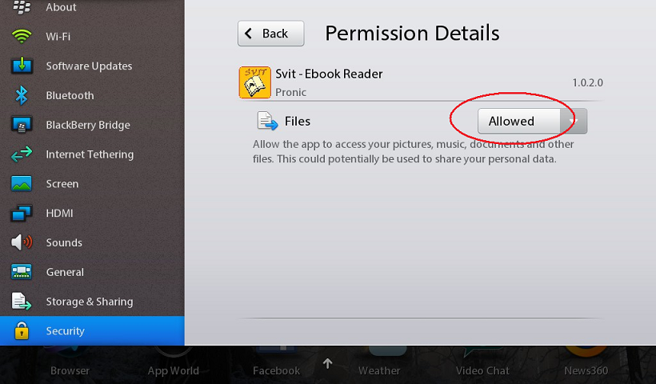

SVIT - Ebook Reader with EPUB Support is an application that reads non-DRM digital ebooks in the EPUB format and comes with 30 preloaded free ebooks.
It has the following features:
• outlook and page turning as in Kobo or Kindle,
• page turning also with tapping,
• very fast page turning (the complete book is read and rendered during loading),
• landscape and portrait orientation mode with auto-rotate functionality,
• customizable fonts,
• memorizing the current page,
• go to page using slider,
• highlights,
• file browse mode to support folders,
• bookmarks, and
• follow-my-finger.
The SVIT Ebook Reader also connects to the PROJECT GUTENBERG site where you can search among 36,000 FREE high quality ebooks, download them, and read them offline. You can also read your own collections of digital non-DRM EPUB ebooks.
In case of any problem with EPUB digital books, please contact info@pronic.si.
When launching SVIT for the first time, the user must allow file access.
After the user accepts the end-user licence agreement, the application copies all 30 free ebooks into the books folder.
If the user refuses to allow file access, the permission must be given manually. On the PlayBook's Option screen, tap on Security and Application Permissions.
Then tap on the SVIT application icon.
Switch file permission to Allowed.

The main screen is divided into three areas: upper area with system options, middle area with a list of titles, and lower area to manipulate with digital books.
To work with ebooks, select the desired file and tap on the Open book button.
To open a dialog with web sites containing free digital books, tap on the Go to web button.
By tapping on the Synchronize button, the application scans the current folder and refreshes the list of titles.
The screen is divided into multiple areas:
• upper area showing book title,
• upper right area showing bookmark,
• bottom area showing book page percentage, page position and word position,
• left and right area for Follow my Finger, and
• central area showing book content.
Multiple actions can be performed on this screen.
To move to the next page, tap on the Next page icon or swipe to the left inside the content area.
To move to the previous page, tap on the Previous page icon or swipe to the right inside the content area.
The page slider is activated by tapping on the bottom area. Move the slider to jump to specific page. Tap on the book content area to hide the slider.
To show the Follow my Finger line, tap and hold on the left or right screen area. By moving the line, the user can read the content easier. Move your finger to the bezel to lock the Follow my Finger line.
To highlight a word, tap on the specific word. Repeat to undo.
To create a bookmark, tap on the upper right corner of the screen. To delete the bookmark, tap again.
To view an image, tap on IMAGE (TAP TO OPEN) tag. To close the image, tap outside of the viewer.
Swipe down from the bezel to show a menu.
To hide a menu, tap on the content area.
To change the font, tap on the Font name button. In the font dialog, select a font and tap on the OK button.
The application comes with five font sizes: XS (extra small), S (small), M (medium), L (large), and XL (extra large).
To switch to the night mode (white fonts on black background), tap on the Night mode button.
In the day mode, the user can choose among four background colors.
Tap on the Bookmark button to open a dialog with all bookmarks.
Select a bookmark and tap on the OK button to jump to the selected bookmark.
Tap on the Search button to open a search dialog. After entering the desired word (simple search), tap on the Search button.
Tap on the Reset button to reset the book's bookmarks and highlights.